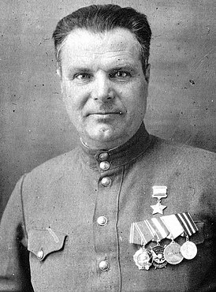
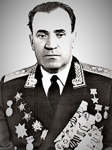
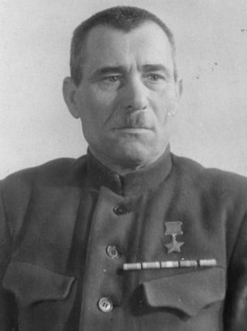
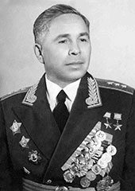

Герои Витебщины:
   .jpg)

 Современная мемориальная доска Ф.Т. Блохину
Современная мемориальная доска Ф.Т. Блохину
В честь Блохина мост назван в 1974 году. В конце 1980-х годов было принято решение о демонтаже старого моста Блохина и постройке нового на том же месте. В 1988 году на мосту было закрыто автомобильное движение, но ещё около года по нему ходили трамваи. Новый мост Блохина открыт для движения в 1992 году. В 2010 году на мосту установлена декоративная подсветка.
 Мост Блохина
Мост Блохина
У каждого воина были дни и события на войне, которые помнятся до смертного часа. Таким в жизнь Михаила Ивановича Дружинина вошло 23 июня 1944 года. Так получилось, что до этого дня почти пять лет Михаил Дружинин учился в школе младших командиров 215-го отдельного батальона связи 156-й стрелковой дивизии, то есть готовился к бою.Потом в той же школе младший сержант Дружинин командовал радиоотделением курсантов. Когда началась война, он хотел на фронт, а его как классного специалиста направили в отдельную 11-ю запасную стрелковую бригаду, где Михаил готовил связистов. И только в марте 1943 года ему посчастливилось «вырваться» из запасной бригады на курсы политсостава. В январе 1944 года лейтенант Дружинин прибыл наконец на фронт, а с апреля занял должность комсорга в 61-м полку 19-й гвардейской стрелковой дивизии. В июне 1944 года в полк приехала армейская комиссия и проверила, чему научились гвардейцы за два месяца боевой учебы. А они умели стремительно атаковать противника, метко поражать его огнем из всех видов оружия, форсировать водные преграды, вести рукопашный бой, преодолевать различные инженерные заграждения, уничтожать вражеские танки. 5-й гвардейский стрелковый корпус, куда входила 19-я дивизия, 22 июня занял исходное положение для наступления южнее Витебска. Михаил Дружинин с нетерпением ждал боя, к которому так долго готовился. Гвардейцы с ходу овладели первой вражеской траншеей и завязали гранатный бой за вторую траншею. Очистив ее, Дружинин с группой гвардейцев вышел на высокий восточный берег реки Лучесы. Два деревянных моста через реку, располагающихся практически в 250 метрах друг от друга, были спасены от взрыва практически в рукопашном бою, что помогло разведывательным взводам полка форсировать реку.


В то же утро к спасенным от взрыва мостам через Лучесу подошел танковый батальон 28-й танковой бригады. Машины с ходу переправились и взяли курс на Замосточье, где немцы не успели закрепиться и были вынуждены бежать. Таким образом, и 61-й полк, и вся 19-я дивизия в первый же день наступления продвинулась не на 10-11 километров, как планировалось, а на 22 километра. Быстрое продвижение 6-го гвардейского стрелкового корпуса имело большое значение в окружении и разгроме витебской группировки противника, которое завершилось уже 27 июня силами 39-й и 43-й армий. В котле было уничтожено 20 тысяч гитлеровцев, а 17 тысяч, сдавшихся в плен, в июле 1944 года прошли по улицам Москвы в составе многотысячной колонны плененных фашистских вояк.
 Места на Лучесе бдиз Замосточья, где происходили бои
Места на Лучесе бдиз Замосточья, где происходили бои